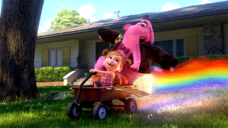
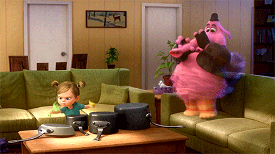

About Bing bong
Bing bong is awesome! Bing Bong was Riley's adorable imaginary friend created during her early childhood. However, as Riley grew older, she stopped playing with him, leaving Bing Bong out of a job and a bit lonely.
Drifting around Long Term Memory unbeknownst to the other mental denizens, he collected happy memories he liked into a bottomless bag. He greatly missed the times he shared with Riley and was desperate to not be forgotten.

Bing bong with Riley
Bing bong's Characteristics
- Bing Bong was Riley's adorable imaginary friend
- Bing bong has naïve nature since he was created when Riley was a toddler
- Bing bong's final words: "Take her to the moon for me, okay?" before fading away as he is being forgotten.
Bing bong's Friends
Bing bong has good friends! Click on the links below to read more about them: